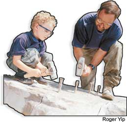
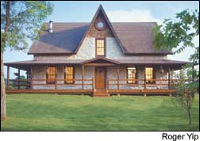
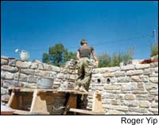
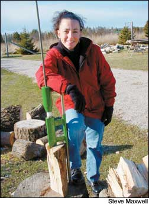
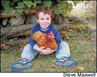

Issue # 210 - June/July 2005
With motivation, hard work (and an Internet connection), the dream of going back to the land is more attainable than ever.
I used to daydream about going back to the land and building a place of my own. When I finally did it, I discovered the reality of homesteading was even better than I had imagined.
My grandfather took me to see the original Grizzly Adams movie, The Life and Times of Grizzly Adams, when I was 12 years old. As I watched the story of a man learning to survive in the wilderness, for the first time in my life I glimpsed a way of living that was in harmony with nature. That idea was extremely compelling to me, even if the story was contrived from a Hollywood director’s chair. One of the main attractions for me was freedom from the need for money. As a youngster, I thought the prospect of a money-free lifestyle in the wilderness looked like a great alternative to the few dollars I earned each week cutting grass and painting garages.
I grew up in a sprawling Toronto suburb, where I was fortunate enough to meet my wife, Mary, during our last year of high school. But by the end of my teens, I couldn’t wait to move away. More than anything, I was thirsty for a piece of land. I wanted a place with plenty of scope for my imagination, a patch of ground with enough room to dream big, get my hands dirty, and forge a sustainable and beautiful partnership with the natural world. More than 20 years later, I’m here to tell you that such a life is possible, and that here in the country there’s room for you, too.
When I was 23, Mary and I bought a 91-acre parcel of farmland and forest on Manitoulin Island, nestled along the north shore of Lake Huron in Ontario. Five years after that, we settled into the mortgage-free stone-and-timber house that we built for ourselves on the property. Today we share this home with our four island-born children: Robert, 14; Katherine, 10; Joseph, 7; and Jacob, 4.
Manitoulin Island is almost 100 miles long, and it’s an uncommon mixture of small farms, clean lakes and healthy forests. About 12,000 people live here year-round; the summer population swells to about 50,000. A few books have been written about the island, but the most telling title is Forever on the Fringe. From one end to the other, this island is the kind of rural area without a whiff of the city anywhere.
One of my founding principles always has been to avoid debt, and this is especially true when it comes to buying land and building a home. When Mary and I bought this property, we economized and bought land without buildings (it cost $16,500 in Canadian dollars back in 1986, which would have been about $12,000 in U.S.ollars). Then, we built an uninsulated 10-by-20-foot wood-frame shed for $550. It was big enough to offer both tool storage and living quarters, but just barely. We lived there for several years while we crafted our house, moving out just a week before our son Robert was born.
We built a three-story Victorian-style home totaling about 2,500 square feet. Except for some help with the drywall and the lifting of a few of the longer walls, Mary and I built our home entirely with our own hands. All the stone and timber used in our house came from our property, which saved us a lot of money but required many hours of hard labor. We built the 24-inch-thick basement walls with 350 tons of hand-quarried limestone blocks that we wrestled out of the ground with pry bars, broke into pieces with stone hammers and then put back together into a foundation wall resting on smooth bedrock 7 feet below soil level. The basement floor is the bedrock itself, and it still shows scratch marks from the advance of the last glacier about 10,000 years ago. The stone basement alone gobbled up the labor of two-and-a-half building seasons - totaling 2,500 hours.
The house’s wood frame is a hybrid structure of 2-by-6 stud-frame walls, for the exterior and the roof, and exposed posts and beams, visible everywhere indoors. We chose this method of construction because it meant that the timbers we used for the interior could go up piece by piece, and just the two of us could build the house. An entirely timber-framed house would have required a crane or a massive construction crew. Including the timberwork, it took us more than three months to build the frame and shingle the roof.
This house matches our vision of what our home should be. Over the years, I’ve spent quite a bit of time studying passive solar home designs, but I’ve never seen a solar home that satisfied my need for traditional good looks. So, we built the Victorian-style house we had dreamed of and insulated like crazy. To help meet our energy needs, we also use our forest as a giant solar collector: We usually heat with wood that we cut from blow-downs and beaver-felled trees. This year, we’re using a pellet stove, burning pellets made from sawmill waste.
The build-it-yourself process is slow, but the work is satisfying. The easy pace allows time to make optimal decisions about details that would have to be decided in a day or two on any contractor-built project. You also have time to earn money while you go.
When Mary and I came to Manitoulin Island, we knew we would have to work hard if we were going to make it financially. We repaired miles of cedar rail fences that surrounded our fields, opening the property for grazing. We planted a market garden, and I cultivated opportunities to build furniture and do carpentry work: I’ve made traditional solid-wood furniture, and I’ve also built kitchens. Mary began working at a small hospital about 30 minutes from our home. All in all, our approach more than paid the bills, but it was very different from the way we earn money today.
The money-free mindset was my ideal for years, until I realized something vital: For me, sane living didn’t require completely shunning money. What I needed was to find an opportunity to earn a living while cultivating a close connection with nature and with my land. To my surprise, the Internet has played a major role in making that happen for us, a development I never would have predicted years ago, when I regarded anything related to computers with suspicion.
Today we earn a little income from a “you-pick” raspberry operation and from renting some of our land to a neighbor who grazes cattle, but it’s the financial opportunities offered by the Internet that keep us afloat. The Internet takes geography out of the equation, allowing people with even a small entrepreneurial streak to plug into markets anywhere. I have to admit that this has proven much more fun than I could have imagined. As an added benefit, Mary has been able to stay home full time since 1998.
For me, financial opportunities have come from creating and exporting stories and images about woodworking and home building to magazines and newspapers across North America via the Internet. But the Internet has much greater potential for rural businesses. Even though my homeplace is as out of the way as you can get, I still catch glimpses of many more small-scale business opportunities than I could ever pursue myself: Any product you can create at home you can find a place for online, from handcrafted wooden furniture to homemade jams and jellies. You can keep in touch with an employer hundreds of miles away, or with customers who are looking for the specialty items you produce.
Does this high-tech, information-based approach sound like a breach of the back-to-the-land ideal? I used to think so, but I now see that small rural markets often have all the goods and services they need. They’re saturated, and that’s why wages are typically low. To create financial opportunities for yourself out here on the land, you have to look beyond the markets you can see, and understand that the Internet is the universal connection to those unseen opportunities. I’m convinced that this approach has an important place in the small-scale sustainable-homesteading model of the 21st century.
Mary and I started out here with no hands-on knowledge of homesteading, but we quickly learned by reading, watching others, asking questions and making mistakes. I firmly believe that anyone can learn just about any skill if they want to learn badly enough. It’s motivation that’s often in short supply.
Although I have to admit that the life we live now isn’t exactly what I imagined as an idealistic teenager, the reality is even more fulfilling. Saving money by saying “yes” to simplicity is one thing, but I’m also hopelessly committed to surrounding myself with beautiful, durable things. I see our property as an artist’s canvas that we’ll be painting for the rest of our lives: stone buildings, gardens, orchards and a new generation of young people to love the place as we do and carry on the vision.
I’ve also learned that to make that vision succeed, it’s absolutely necessary to cultivate strong family relationships. This is sustainability of another sort, and it often boils down to having the willpower and love to care for your partners in the adventure. There are fewer distractions in the country, and when you don’t have to drive away to work every weekday morning at 7 a.m., the quality of your relationships comes into sharper focus than for the typical two- income family where couples spend most of their days apart. Relationship meltdowns may not be as spectacular as a full-blown barn fire, but they’re every bit as destructive to any homesteading dream.
Living joyfully and sustainably on a piece of land isn’t necessarily easier than life in the city, nor is it for everyone. But I think that success outside the city is more possible now than ever, and I’d like nothing better than to see thousands of hardworking, wise, idealistic people head out onto the land and make it bloom.
Steve Maxwell is a Mother Earth News contributing editor who writes about woodworking and other homesteading projects.
|
 Steve works with his son Joseph. |
 Nine-inch-thick hand-quarried limestone covers the stud-and-timber frame of the Maxwell’s owner-built homestead |
 Basement walls are 24 inches thick, resting on smooth limestone bedrock. |
|
 |
 |
|